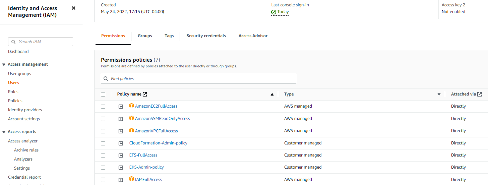

Prerequisites
IAM user and permissions
We will create a new IAM user (eks-user) for the purposes of the tutorial. Please keep in mind that you should never use your root account for working with AWS services.
Create policies
Create these 2 policies:
- EKS-Admin-policy:
{
"Version": "2012-10-17",
"Statement": [
{
"Effect": "Allow",
"Action": [
"eks:*"
],
"Resource": "*"
}
]
}
- CloudFormation-Admin-policy:
{
"Version": "2012-10-17",
"Statement": [
{
"Effect": "Allow",
"Action": [
"cloudformation:*"
],
"Resource": "*"
}
]
}
Assign policies
Finally, assign the following policies to your IAM user you are going to use throughout the course:
- AmazonEC2FullAccess
- IAMFullAccess
- AmazonVPCFullAccess
- CloudFormation-Admin-policy
- EKS-Admin-policy
where the last 2 policies are the ones you created above

Create IAM role
- Open
https://console.aws.amazon.com/iam/and choose Roles => create role - Choose EKS service followed by Allows Amazon EKS to manage your clusters on your behalf
- Choose Next: Permissions
- Click Next: Review
- Enter a unique Role name, EKS-course-role and click Create Role
Create key Pair
- Open EC2 dashboard
https://console.aws.amazon.com/ec2 - Click KeyPairs in left navigation bar under section "Network&Security"
- Click Create Key Pair
- Provide name for keypair, eks-course and click Create
- The keypair will be downloaded immediately => file eks-course.pem
Create API Access key/secret
- Create key+secret via AWS console
AWS-console => IAM => Users =>
=> tab Security credentials => button Create access key